2026 Advanced Higher Physics questions
Source: Scottish Qualifications Authority (SQA) / Qualifications Scotland. This is a StemInteract HTML companion, not an official HTML edition. Selectable text is supplied alongside original page images. Use the images or original PDF for equations, powers, fractions, vector notation, tables and diagrams; text extraction cannot fully preserve mathematical layout.
Jump to a question
PDF page 1
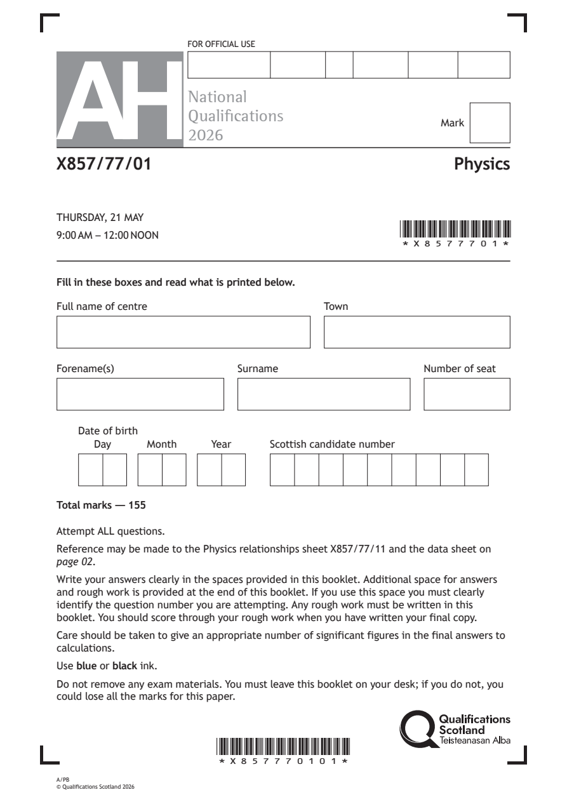
Selectable page text
FOR OFFICIAL USE
AH
National
Qualications
Mark
2026
X857/77/01 Physics
THURSDAY, 21 MAY
9:00 AM – 12:00 NOON
*X8577701*
Fill in these boxes and read what is printed below.
Full name of centre Town
Forename(s) Surname Number of seat
Date of birth
Day Month Year Scottish candidate number
Total marks — 155
Attempt ALL questions.
Reference may be made to the Physics relationships sheet X857/77/11 and the data sheet on
page 02.
Write your answers clearly in the spaces provided in this booklet. Additional space for answers
and rough work is provided at the end of this booklet. If you use this space you must clearly
identify the question number you are attempting. Any rough work must be written in this
booklet. You should score through your rough work when you have written your final copy.
Care should be taken to give an appropriate number of significant figures in the final answers to
calculations.
Use blue or black ink.
Do not remove any exam materials. You must leave this booklet on your desk; if you do not, you
could lose all the marks for this paper.
*X857770101*
A/PB
© Qualifications Scotland 2026PDF page 2
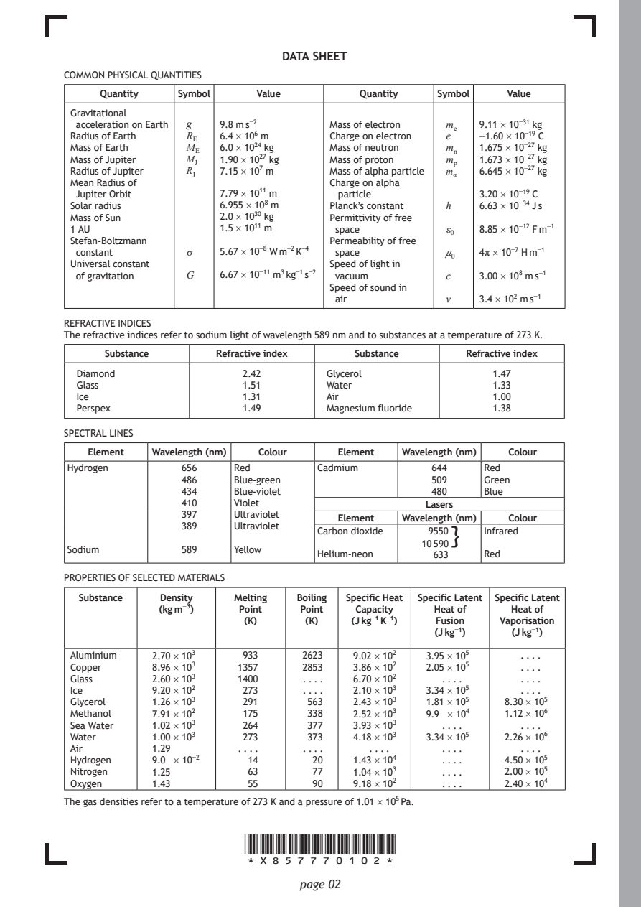
Selectable page text
DATA SHEET
COMMON PHYSICAL QUANTITIES
Quantity Symbol Value Quantity Symbol Value
Gravitational
acceleration on Earth g 9.8 m s⁻² Mass of electron mₑ 9.11 × 10⁻³¹ kg
Radius of Earth R_{E} 6.4 × 10⁶ m Charge on electron e −1.60 × 10⁻¹⁹ C
Mass of Earth M_{E} 6.0 × 10²⁴ kg Mass of neutron mₙ 1.675 × 10⁻²⁷ kg
Mass of Jupiter M_{J} 1.90 × 10²⁷ kg Mass of proton mₚ 1.673 × 10⁻²⁷ kg
Radius of Jupiter R_{J} 7.15 × 10⁷ m Mass of alpha particle m_{α} 6.645 × 10⁻²⁷ kg
Mean Radius of Charge on alpha
Jupiter Orbit 7.79 × 10¹¹ m particle 3.20 × 10⁻¹⁹ C
Solar radius 6.955 × 10⁸ m Planck’s constant h 6.63 × 10⁻³⁴ J s
Mass of Sun 2.0 × 10³⁰ kg Permittivity of free
1 AU 1.5 × 10¹¹ m space ε₀ 8.85 × 10⁻¹² F m⁻¹
Stefan‑Boltzmann Permeability of free
constant σ 5.67 × 10⁻⁸ W m⁻² K⁻⁴ space μ₀ 4π × 10⁻⁷ H m⁻¹
Universal constant Speed of light in
of gravitation G 6.67 × 10⁻¹¹ m³ kg⁻¹ s⁻² vacuum c 3.00 × 10⁸ m s⁻¹
Speed of sound in
air v 3.4 × 10² m s⁻¹
REFRACTIVE INDICES
The refractive indices refer to sodium light of wavelength 589 nm and to substances at a temperature of 273 K.
Substance Refractive index Substance Refractive index
Diamond 2.42 Glycerol 1.47
Glass 1.51 Water 1.33
Ice 1.31 Air 1.00
Perspex 1.49 Magnesium fluoride 1.38
SPECTRAL LINES
Element Wavelength (nm) Colour Element Wavelength (nm) Colour
Hydrogen 656 Red Cadmium 644 Red
486 Blue‑green 509 Green
434 Blue‑violet 480 Blue
410 Violet Lasers
397 Ultraviolet
Element Wavelength (nm) Colour
389 Ultraviolet
Carbon dioxide 9550} Infrared
10 590
Sodium 589 Yellow
Helium‑neon 633 Red
PROPERTIES OF SELECTED MATERIALS
Substance Density Melting Boiling Specific Heat Specific Latent Specific Latent
(kg m⁻³) Point Point Capacity Heat of Heat of
(K) (K) (J kg⁻¹ K⁻¹) Fusion Vaporisation
(J kg⁻¹) (J kg⁻¹)
Aluminium 2.70 × 10³ 933 2623 9.02 × 10² 3.95 × 10⁵ . . . .
Copper 8.96 × 10³ 1357 2853 3.86 × 10² 2.05 × 10⁵ . . . .
Glass 2.60 × 10³ 1400 . . . . 6.70 × 10² . . . . . . . .
Ice 9.20 × 10² 273 . . . . 2.10 × 10³ 3.34 × 10⁵ . . . .
Glycerol 1.26 × 10³ 291 563 2.43 × 10³ 1.81 × 10⁵ 8.30 × 10⁵
Methanol 7.91 × 10² 175 338 2.52 × 10³ 9.9 × 10⁴ 1.12 × 10⁶
Sea Water 1.02 × 10³ 264 377 3.93 × 10³ . . . . . . . .
Water 1.00 × 10³ 273 373 4.18 × 10³ 3.34 × 10⁵ 2.26 × 10⁶
Air 1.29 . . . . . . . . . . . . . . . . . . . .
Hydrogen 9.0 × 10⁻² 14 20 1.43 × 10⁴ . . . . 4.50 × 10⁵
Nitrogen 1.25 63 77 1.04 × 10³ . . . . 2.00 × 10⁵
Oxygen 1.43 55 90 9.18 × 10² . . . . 2.40 × 10⁴
The gas densities refer to a temperature of 273 K and a pressure of 1.01 × 10⁵ Pa.
*X857770102*
page 02PDF page 3
Selectable page text
[Turn over for next question
DO NOT WRITE ON THIS PAGE
*X857770103*
page 03PDF page 4
Question 1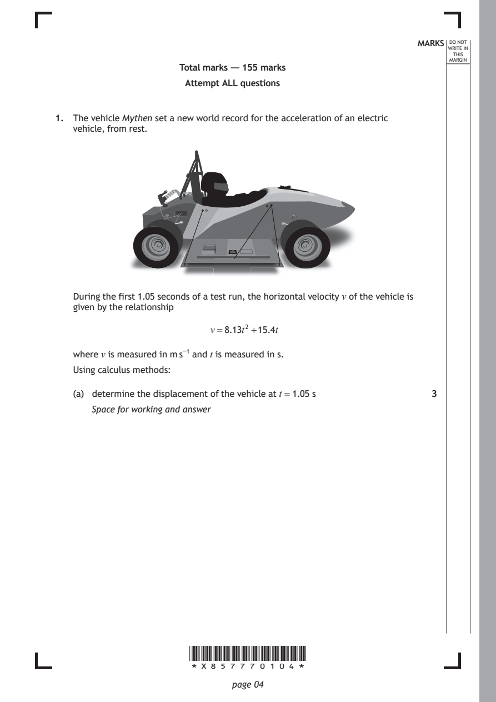
Selectable page text
MARKS _{W}^{D}_{R}^{O}_{I} _{T}^{N}OT
E IN
THIS
MARGIN
Total marks — 155 marks
Attempt ALL questions
1. The vehicle Mythen set a new world record for the acceleration of an electric
vehicle, from rest.
During the first 1.05 seconds of a test run, the horizontal velocity v of the vehicle is
given by the relationship
v=8.13t² +15.4t
where v is measured in m s⁻¹ and t is measured in s.
Using calculus methods:
(a) determine the displacement of the vehicle at t = 1.05 s 3
Space for working and answer
*X857770104*
page 04PDF page 5
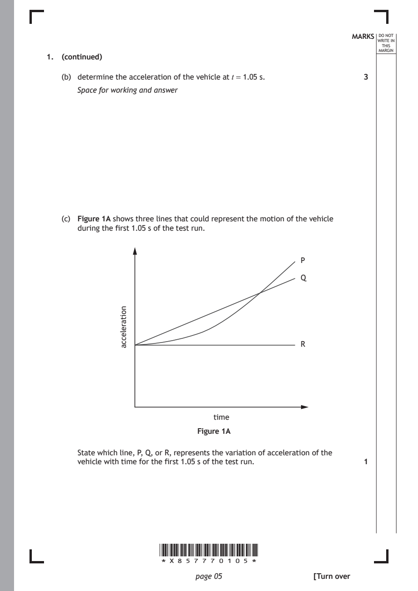
Selectable page text
MARKS _{W}^{D}_{R}^{O}_{I} _{T}^{N}OT
E IN
THIS
MARGIN
1. (continued)
(b) determine the acceleration of the vehicle at t = 1.05 s.
Space for working and answer
(c) Figure 1A shows three lines that could represent the motion of the vehicle
during the first 1.05 s of the test run.
*X857770105*
page 05
noitarelecca
3
P
Q
R
time
Figure 1A
State which line, P, Q, or R, represents the variation of acceleration of the
vehicle with time for the first 1.05 s of the test run. 1
[Turn overPDF page 6
Question 2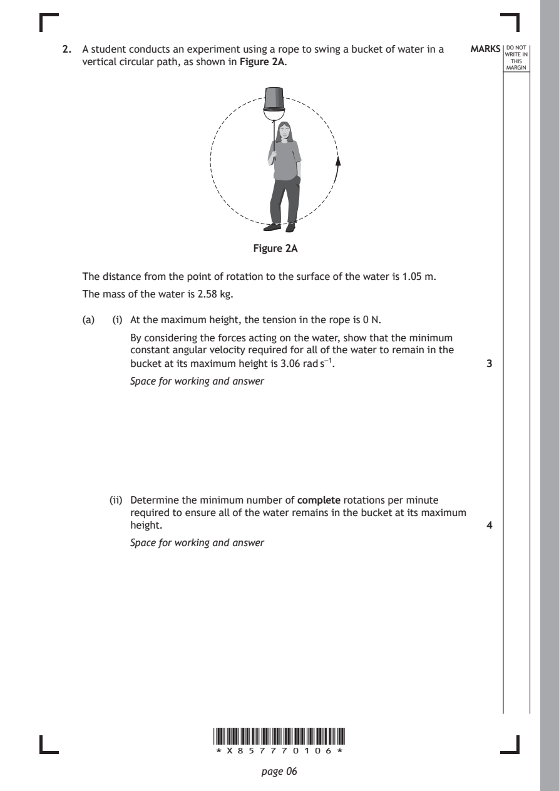
Selectable page text
2. A student conducts an experiment using a rope to swing a bucket of water in a MARKS _{W}^{D}_{R}^{O}_{I} _{T}^{N}OT
E IN
vertical circular path, as shown in Figure 2A. THIS
MARGIN
Figure 2A
The distance from the point of rotation to the surface of the water is 1.05 m.
The mass of the water is 2.58 kg.
(a) (i) At the maximum height, the tension in the rope is 0 N.
By considering the forces acting on the water, show that the minimum
constant angular velocity required for all of the water to remain in the
bucket at its maximum height is 3.06 rad s⁻¹. 3
Space for working and answer
(ii) Determine the minimum number of complete rotations per minute
required to ensure all of the water remains in the bucket at its maximum
height. 4
Space for working and answer
*X857770106*
page 06PDF page 7
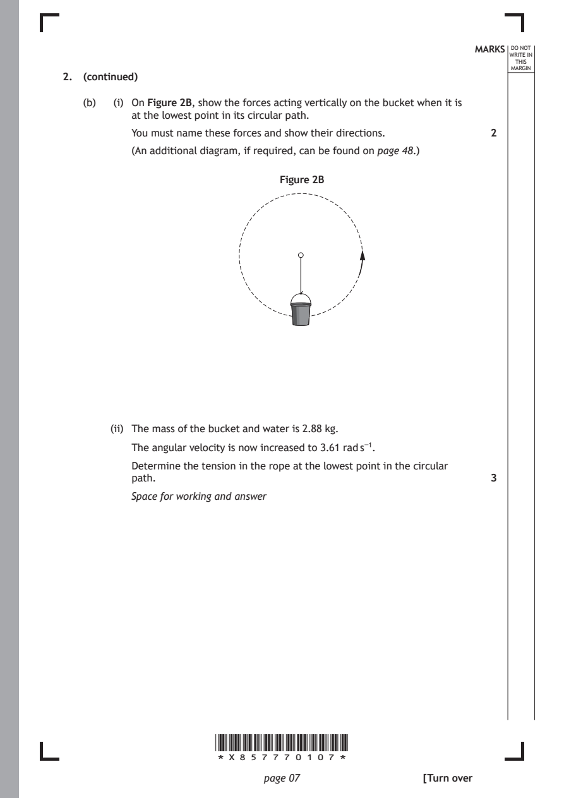
Selectable page text
MARKS _{W}^{D}_{R}^{O}_{I} _{T}^{N}OT
E IN
THIS
MARGIN
2. (continued)
(b) (i) On Figure 2B, show the forces acting vertically on the bucket when it is
at the lowest point in its circular path.
You must name these forces and show their directions. 2
(An additional diagram, if required, can be found on page 48.)
Figure 2B
(ii) The mass of the bucket and water is 2.88 kg.
The angular velocity is now increased to 3.61 rad s⁻¹.
Determine the tension in the rope at the lowest point in the circular
path. 3
Space for working and answer
*X857770107*
page 07 [Turn overPDF page 8
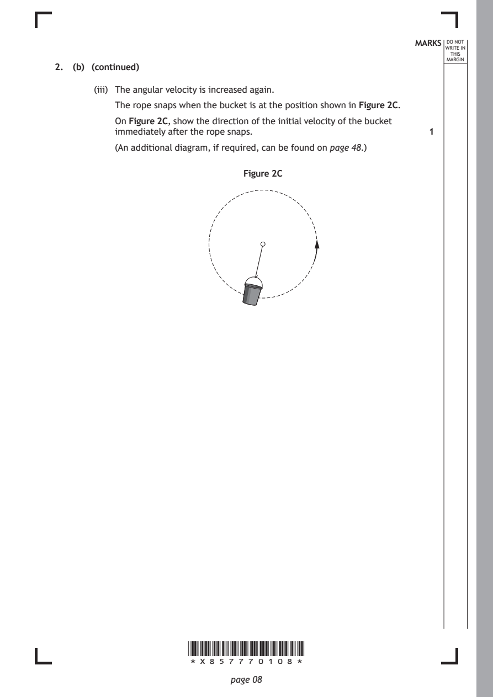
Selectable page text
MARKS _{W}^{D}_{R}^{O}_{I} _{T}^{N}OT
E IN
THIS
MARGIN
2. (b) (continued)
(iii) The angular velocity is increased again.
The rope snaps when the bucket is at the position shown in Figure 2C.
On Figure 2C, show the direction of the initial velocity of the bucket
immediately after the rope snaps. 1
(An additional diagram, if required, can be found on page 48.)
Figure 2C
*X857770108*
page 08PDF page 9
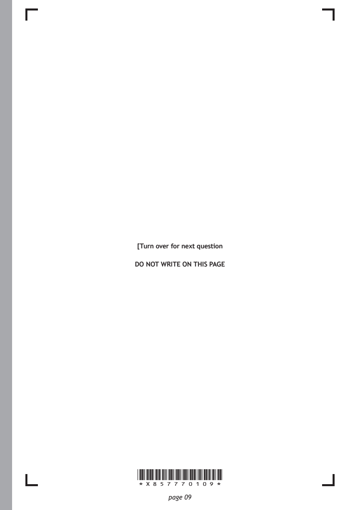
Selectable page text
[Turn over for next question
DO NOT WRITE ON THIS PAGE
*X857770109*
page 09PDF page 10
Question 3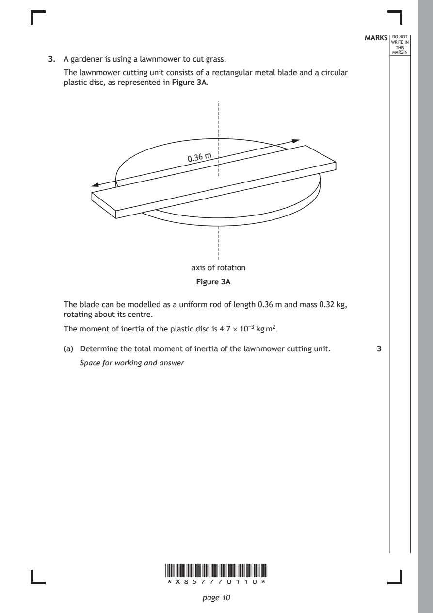
Selectable page text
MARKS _{W}^{D}_{R}^{O}_{I} _{T}^{N}OT
E IN
THIS
MARGIN
3. A gardener is using a lawnmower to cut grass.
The lawnmower cutting unit consists of a rectangular metal blade and a circular
plastic disc, as represented in Figure 3A.
0.36 m
axis of rotation
Figure 3A
The blade can be modelled as a uniform rod of length 0.36 m and mass 0.32 kg,
rotating about its centre.
The moment of inertia of the plastic disc is 4.7 × 10⁻³ kg m².
(a) Determine the total moment of inertia of the lawnmower cutting unit. 3
Space for working and answer
*X857770110*
page 10PDF page 11
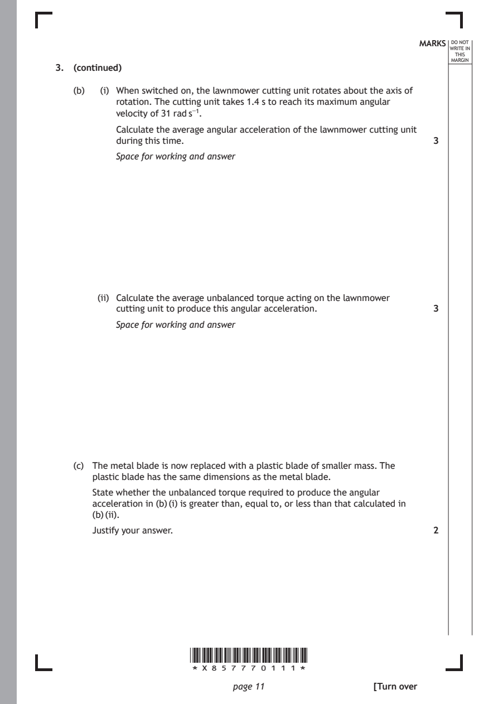
Selectable page text
MARKS _{W}^{D}_{R}^{O}_{I} _{T}^{N}OT
E IN
THIS
MARGIN
3. (continued)
(b) (i) When switched on, the lawnmower cutting unit rotates about the axis of
rotation. The cutting unit takes 1.4 s to reach its maximum angular
velocity of 31 rad s⁻¹.
Calculate the average angular acceleration of the lawnmower cutting unit
during this time. 3
Space for working and answer
(ii) Calculate the average unbalanced torque acting on the lawnmower
cutting unit to produce this angular acceleration. 3
Space for working and answer
(c) The metal blade is now replaced with a plastic blade of smaller mass. The
plastic blade has the same dimensions as the metal blade.
State whether the unbalanced torque required to produce the angular
acceleration in (b) (i) is greater than, equal to, or less than that calculated in
(b) (ii).
Justify your answer. 2
*X857770111*
page 11 [Turn overPDF page 12
Question 4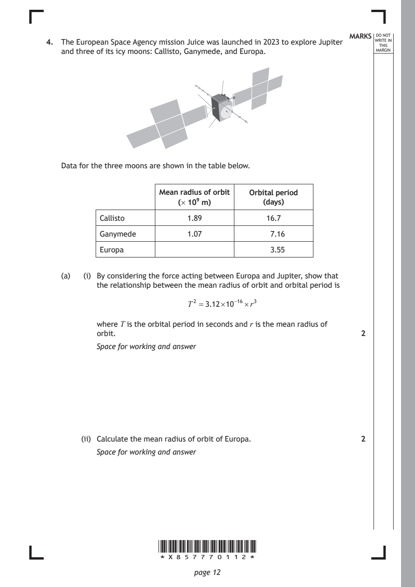
Selectable page text
MARKS _{W}^{D}_{R}^{O}_{I} _{T}^{N}OT
4. The European Space Agency mission Juice was launched in 2023 to explore Jupiter E IN
THIS
and three of its icy moons: Callisto, Ganymede, and Europa. MARGIN
Data for the three moons are shown in the table below.
Mean radius of orbit Orbital period
(× 10⁹ m) (days)
Callisto 1.89 16.7
Ganymede 1.07 7.16
Europa 3.55
(a) (i) By considering the force acting between Europa and Jupiter, show that
the relationship between the mean radius of orbit and orbital period is
T² =3.12×10⁻¹⁶×r³
where T is the orbital period in seconds and r is the mean radius of
orbit. 2
Space for working and answer
(ii) Calculate the mean radius of orbit of Europa. 2
Space for working and answer
*X857770112*
page 12PDF page 13
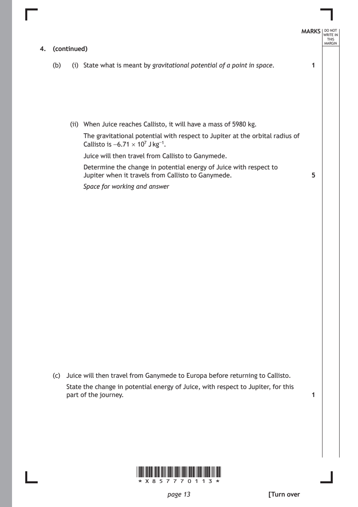
Selectable page text
MARKS _{W}^{D}_{R}^{O}_{I} _{T}^{N}OT
E IN
THIS
MARGIN
4. (continued)
(b) (i) State what is meant by gravitational potential of a point in space. 1
(ii) When Juice reaches Callisto, it will have a mass of 5980 kg.
The gravitational potential with respect to Jupiter at the orbital radius of
Callisto is −6.71 × 10⁷ J kg⁻¹.
Juice will then travel from Callisto to Ganymede.
Determine the change in potential energy of Juice with respect to
Jupiter when it travels from Callisto to Ganymede. 5
Space for working and answer
(c) Juice will then travel from Ganymede to Europa before returning to Callisto.
State the change in potential energy of Juice, with respect to Jupiter, for this
part of the journey. 1
*X857770113*
page 13 [Turn overPDF page 14
Question 5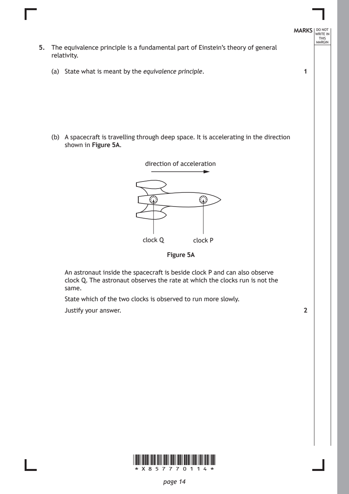
Selectable page text
MARKS _{W}^{D}_{R}^{O}_{I} _{T}^{N}OT
E IN
THIS
MARGIN
5. The equivalence principle is a fundamental part of Einstein’s theory of general
relativity.
(a) State what is meant by the equivalence principle. 1
(b) A spacecraft is travelling through deep space. It is accelerating in the direction
shown in Figure 5A.
direction of acceleration
clock Q clock P
Figure 5A
An astronaut inside the spacecraft is beside clock P and can also observe
clock Q. The astronaut observes the rate at which the clocks run is not the
same.
State which of the two clocks is observed to run more slowly.
Justify your answer. 2
*X857770114*
page 14PDF page 15
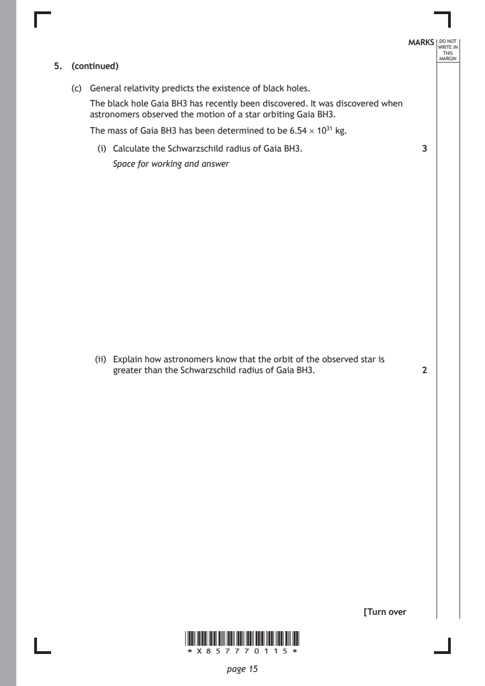
Selectable page text
MARKS _{W}^{D}_{R}^{O}_{I} _{T}^{N}OT
E IN
THIS
MARGIN
5. (continued)
(c) General relativity predicts the existence of black holes.
The black hole Gaia BH3 has recently been discovered. It was discovered when
astronomers observed the motion of a star orbiting Gaia BH3.
The mass of Gaia BH3 has been determined to be 6.54 × 10³¹ kg.
(i) Calculate the Schwarzschild radius of Gaia BH3. 3
Space for working and answer
(ii) Explain how astronomers know that the orbit of the observed star is
greater than the Schwarzschild radius of Gaia BH3. 2
[Turn over
*X857770115*
page 15PDF page 16
Question 6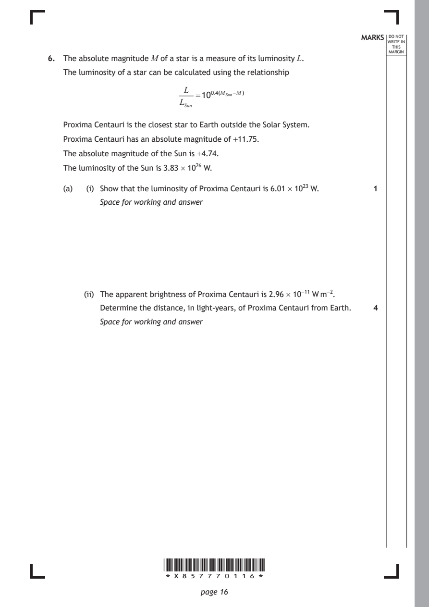
Selectable page text
MARKS _{W}^{D}_{R}^{O}_{I} _{T}^{N}OT
E IN
THIS
MARGIN
6. The absolute magnitude M of a star is a measure of its luminosity L.
The luminosity of a star can be calculated using the relationship
L
=10⁰^{.}⁴⁽^{M}_{S}ᵤₙ−M)
L_{S}ᵤₙ
Proxima Centauri is the closest star to Earth outside the Solar System.
Proxima Centauri has an absolute magnitude of +11.75.
The absolute magnitude of the Sun is +4.74.
The luminosity of the Sun is 3.83 × 10²⁶ W.
(a) (i) Show that the luminosity of Proxima Centauri is 6.01 × 10²³ W. 1
Space for working and answer
(ii) The apparent brightness of Proxima Centauri is 2.96 × 10⁻¹¹ W m⁻².
Determine the distance, in light‑years, of Proxima Centauri from Earth. 4
Space for working and answer
*X857770116*
page 16PDF page 17
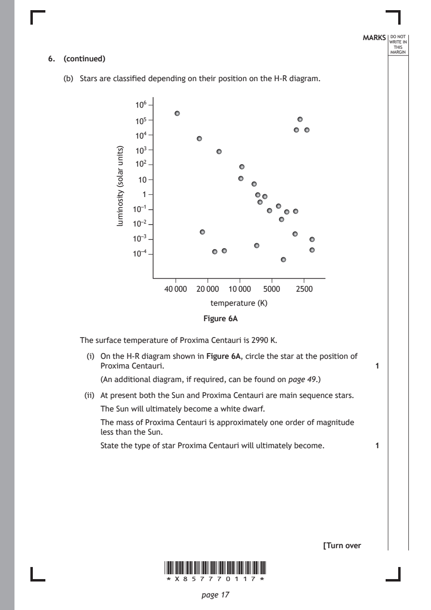
Selectable page text
MARKS _{W}^{D}_{R}^{O}_{I} _{T}^{N}OT
E IN
THIS
MARGIN
6. (continued)
(b) Stars are classified depending on their position on the H‑R diagram.
40 000 20 000 10 000 5000 2500
temperature (K)
*X857770117*
page 17
)stinu
ralos(
ytisonimul
10⁶
10⁵
10⁴
10³
10²
10
1
10^{–}¹
10^{–}²
10^{–}³
10^{–}⁴
Figure 6A
The surface temperature of Proxima Centauri is 2990 K.
(i) On the H‑R diagram shown in Figure 6A, circle the star at the position of
Proxima Centauri. 1
(An additional diagram, if required, can be found on page 49.)
(ii) At present both the Sun and Proxima Centauri are main sequence stars.
The Sun will ultimately become a white dwarf.
The mass of Proxima Centauri is approximately one order of magnitude
less than the Sun.
State the type of star Proxima Centauri will ultimately become. 1
[Turn overPDF page 18
Question 7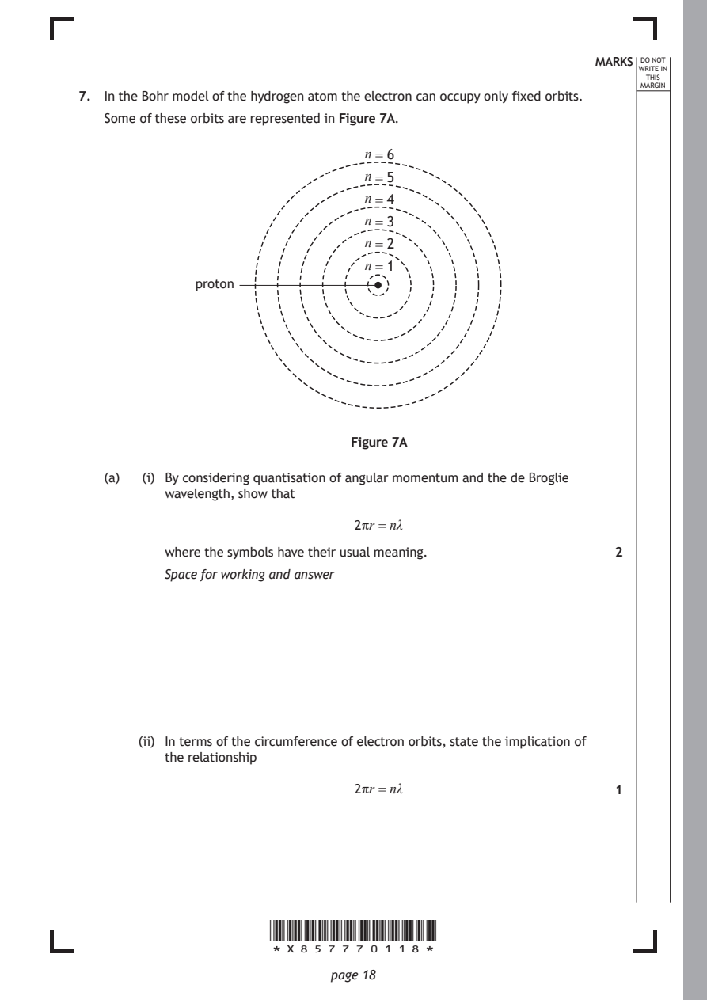
Selectable page text
MARKS _{W}^{D}_{R}^{O}_{I} _{T}^{N}OT
E IN
THIS
MARGIN
7. In the Bohr model of the hydrogen atom the electron can occupy only fixed orbits.
Some of these orbits are represented in Figure 7A.
n = 6
n = 5
n = 4
n = 3
n = 2
n = 1
proton
Figure 7A
(a) (i) By considering quantisation of angular momentum and the de Broglie
wavelength, show that
2πr =nλ
where the symbols have their usual meaning. 2
Space for working and answer
(ii) In terms of the circumference of electron orbits, state the implication of
the relationship
2πr =nλ 1
*X857770118*
page 18PDF page 19
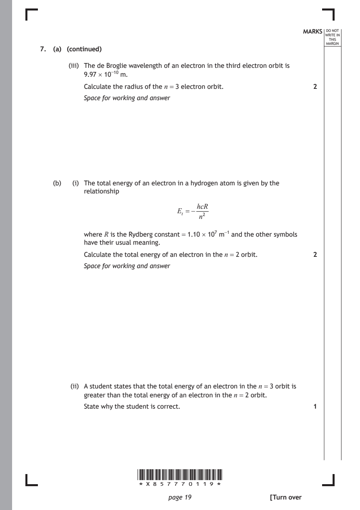
Selectable page text
MARKS _{W}^{D}_{R}^{O}_{I} _{T}^{N}OT
E IN
THIS
MARGIN
7. (a) (continued)
(iii) The de Broglie wavelength of an electron in the third electron orbit is
9.97 × 10⁻¹⁰ m.
Calculate the radius of the n = 3 electron orbit. 2
Space for working and answer
(b) (i) The total energy of an electron in a hydrogen atom is given by the
relationship
hcR
Eₜ =−
n²
where R is the Rydberg constant = 1.10 × 10⁷ m⁻¹ and the other symbols
have their usual meaning.
Calculate the total energy of an electron in the n = 2 orbit. 2
Space for working and answer
(ii) A student states that the total energy of an electron in the n = 3 orbit is
greater than the total energy of an electron in the n = 2 orbit.
State why the student is correct. 1
*X857770119*
page 19 [Turn overPDF page 20
Question 8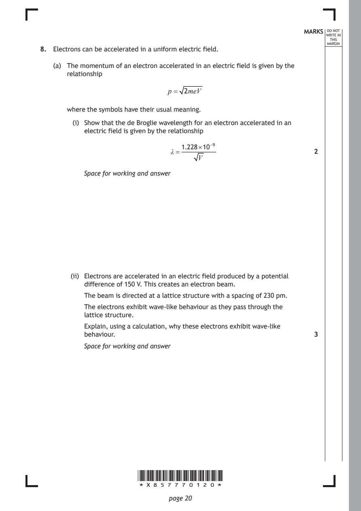
Selectable page text
[StemInteract: this page transcription includes notation repairs checked against the original image. sqrt(...) means square root; ^ denotes a power.]
MARKS _{W}^{D}_{R}^{O}_{I} _{T}^{N}OT
E IN
THIS
MARGIN
8. Electrons can be accelerated in a uniform electric field.
(a) The momentum of an electron accelerated in an electric field is given by the
relationship
p = sqrt(2*m*e*V)
where the symbols have their usual meaning.
(i) Show that the de Broglie wavelength for an electron accelerated in an
electric field is given by the relationship
λ = 1.228e-9/sqrt(V) [2 marks]
Space for working and answer
(ii) Electrons are accelerated in an electric field produced by a potential
difference of 150 V. This creates an electron beam.
The beam is directed at a lattice structure with a spacing of 230 pm.
The electrons exhibit wave‑like behaviour as they pass through the
lattice structure.
Explain, using a calculation, why these electrons exhibit wave‑like
behaviour. 3
Space for working and answer
*X857770120*
page 20PDF page 21
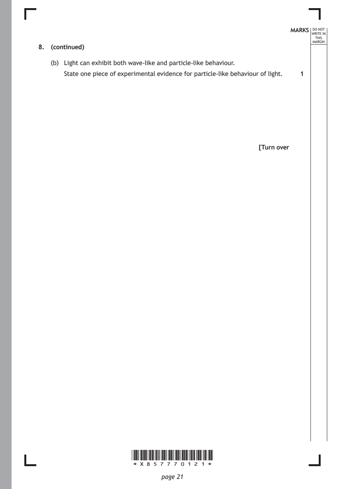
Selectable page text
MARKS _{W}^{D}_{R}^{O}_{I} _{T}^{N}OT
E IN
THIS
MARGIN
8. (continued)
(b) Light can exhibit both wave‑like and particle‑like behaviour.
State one piece of experimental evidence for particle‑like behaviour of light. 1
[Turn over
*X857770121*
page 21PDF page 22
Question 9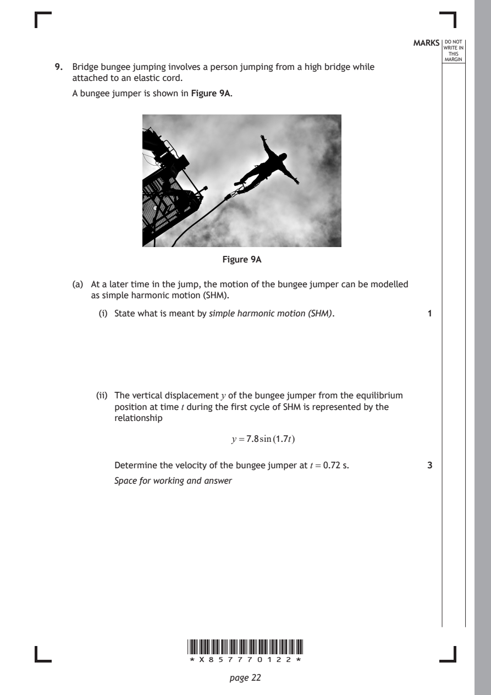
Selectable page text
MARKS _{W}^{D}_{R}^{O}_{I} _{T}^{N}OT
E IN
THIS
MARGIN
9. Bridge bungee jumping involves a person jumping from a high bridge while
attached to an elastic cord.
A bungee jumper is shown in Figure 9A.
Figure 9A
(a) At a later time in the jump, the motion of the bungee jumper can be modelled
as simple harmonic motion (SHM).
(i) State what is meant by simple harmonic motion (SHM). 1
(ii) The vertical displacement y of the bungee jumper from the equilibrium
position at time t during the first cycle of SHM is represented by the
relationship
y =7.8sin(1.7t)
Determine the velocity of the bungee jumper at t = 0.72 s. 3
Space for working and answer
*X857770122*
page 22PDF page 23
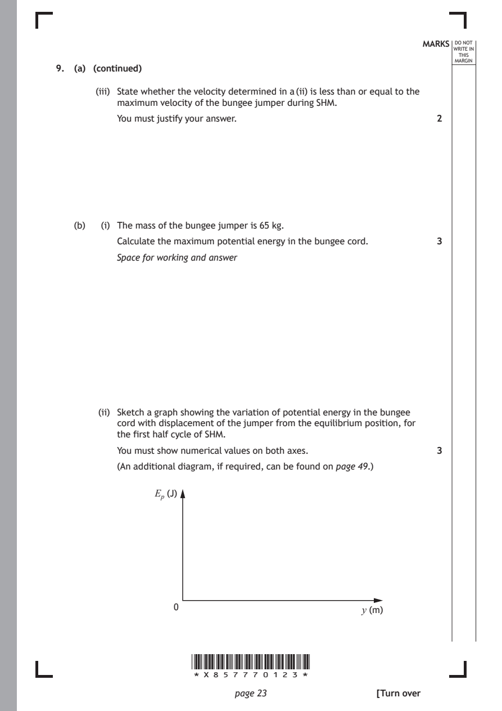
Selectable page text
MARKS _{W}^{D}_{R}^{O}_{I} _{T}^{N}OT
E IN
THIS
MARGIN
9. (a) (continued)
(iii) State whether the velocity determined in a (ii) is less than or equal to the
maximum velocity of the bungee jumper during SHM.
You must justify your answer. 2
(b) (i) The mass of the bungee jumper is 65 kg.
Calculate the maximum potential energy in the bungee cord. 3
Space for working and answer
(ii) Sketch a graph showing the variation of potential energy in the bungee
cord with displacement of the jumper from the equilibrium position, for
the first half cycle of SHM.
You must show numerical values on both axes. 3
(An additional diagram, if required, can be found on page 49.)
Eₚ (J)
0 y (m)
*X857770123*
page 23 [Turn overPDF page 24
Question 10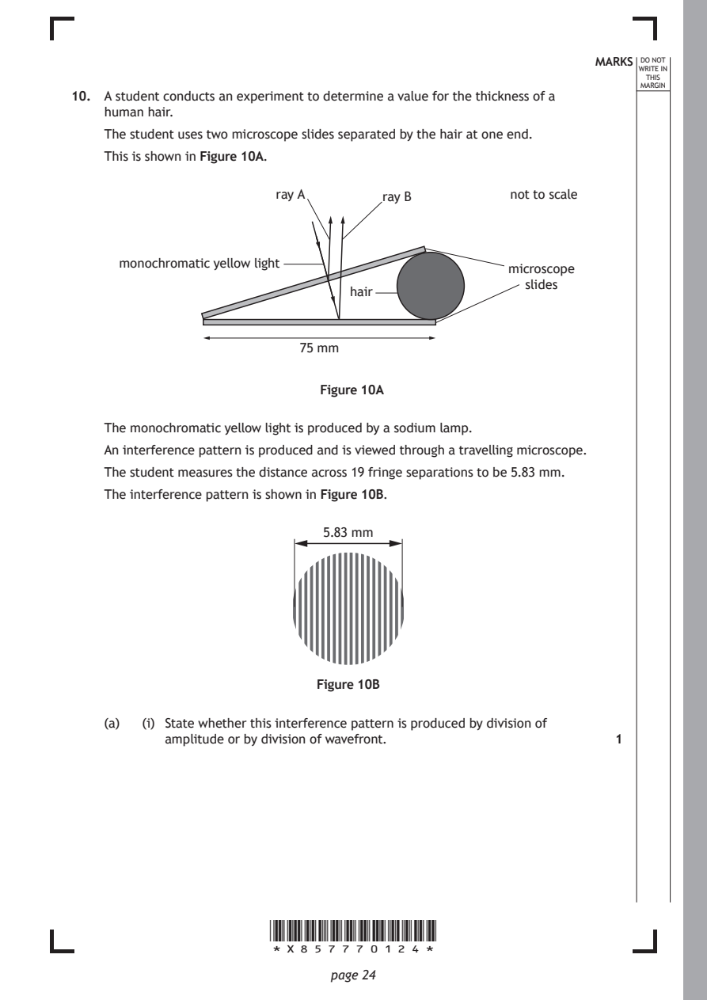
Selectable page text
MARKS _{W}^{D}_{R}^{O}_{I} _{T}^{N}OT
E IN
THIS
MARGIN
10. A student conducts an experiment to determine a value for the thickness of a
human hair.
The student uses two microscope slides separated by the hair at one end.
This is shown in Figure 10A.
ray A ray B not to scale
monochromatic yellow light
microscope
slides
hair
75 mm
Figure 10A
The monochromatic yellow light is produced by a sodium lamp.
An interference pattern is produced and is viewed through a travelling microscope.
The student measures the distance across 19 fringe separations to be 5.83 mm.
The interference pattern is shown in Figure 10B.
5.83 mm
Figure 10B
(a) (i) State whether this interference pattern is produced by division of
amplitude or by division of wavefront. 1
*X857770124*
page 24PDF page 25
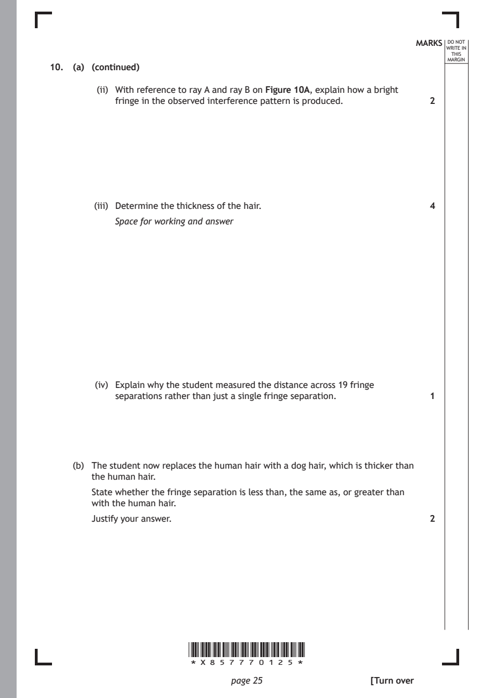
Selectable page text
MARKS _{W}^{D}_{R}^{O}_{I} _{T}^{N}OT
E IN
THIS
MARGIN
10. (a) (continued)
(ii) With reference to ray A and ray B on Figure 10A, explain how a bright
fringe in the observed interference pattern is produced. 2
(iii) Determine the thickness of the hair. 4
Space for working and answer
(iv) Explain why the student measured the distance across 19 fringe
separations rather than just a single fringe separation. 1
(b) The student now replaces the human hair with a dog hair, which is thicker than
the human hair.
State whether the fringe separation is less than, the same as, or greater than
with the human hair.
Justify your answer. 2
*X857770125*
page 25 [Turn overPDF page 26
Question 11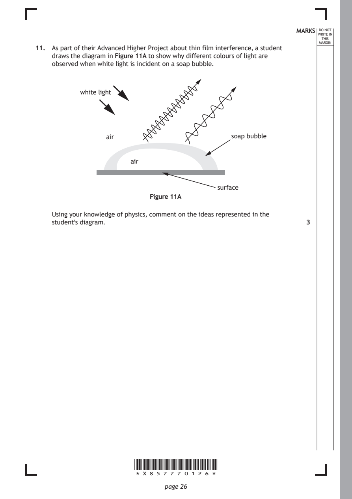
Selectable page text
MARKS _{W}^{D}_{R}^{O}_{I} _{T}^{N}OT
E IN
THIS
MARGIN
11. As part of their Advanced Higher Project about thin film interference, a student
draws the diagram in Figure 11A to show why different colours of light are
observed when white light is incident on a soap bubble.
white light
air soap bubble
air
surface
Figure 11A
Using your knowledge of physics, comment on the ideas represented in the
student’s diagram. 3
*X857770126*
page 26PDF page 27
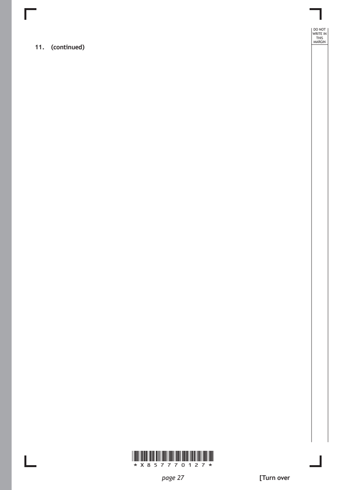
Selectable page text
DO NOT
WRITE IN
THIS
MARGIN
11. (continued)
*X857770127*
page 27 [Turn overPDF page 28
Question 12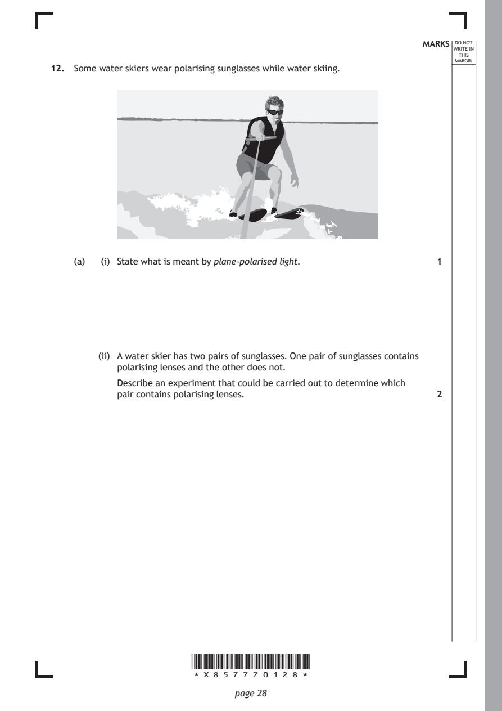
Selectable page text
MARKS _{W}^{D}_{R}^{O}_{I} _{T}^{N}OT
E IN
THIS
MARGIN
12. Some water skiers wear polarising sunglasses while water skiing.
(a) (i) State what is meant by plane‑polarised light. 1
(ii) A water skier has two pairs of sunglasses. One pair of sunglasses contains
polarising lenses and the other does not.
Describe an experiment that could be carried out to determine which
pair contains polarising lenses. 2
*X857770128*
page 28PDF page 29
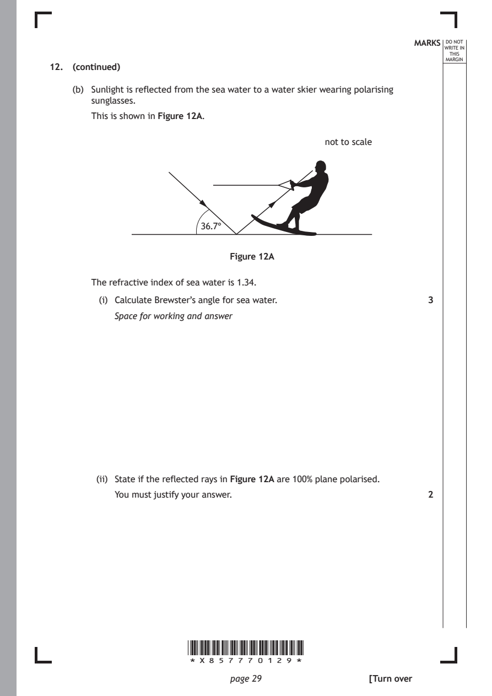
Selectable page text
MARKS _{W}^{D}_{R}^{O}_{I} _{T}^{N}OT
E IN
THIS
MARGIN
12. (continued)
(b) Sunlight is reflected from the sea water to a water skier wearing polarising
sunglasses.
This is shown in Figure 12A.
not to scale
36.7°
Figure 12A
The refractive index of sea water is 1.34.
(i) Calculate Brewster’s angle for sea water. 3
Space for working and answer
(ii) State if the reflected rays in Figure 12A are 100% plane polarised.
You must justify your answer. 2
*X857770129*
page 29 [Turn overPDF page 30
Question 13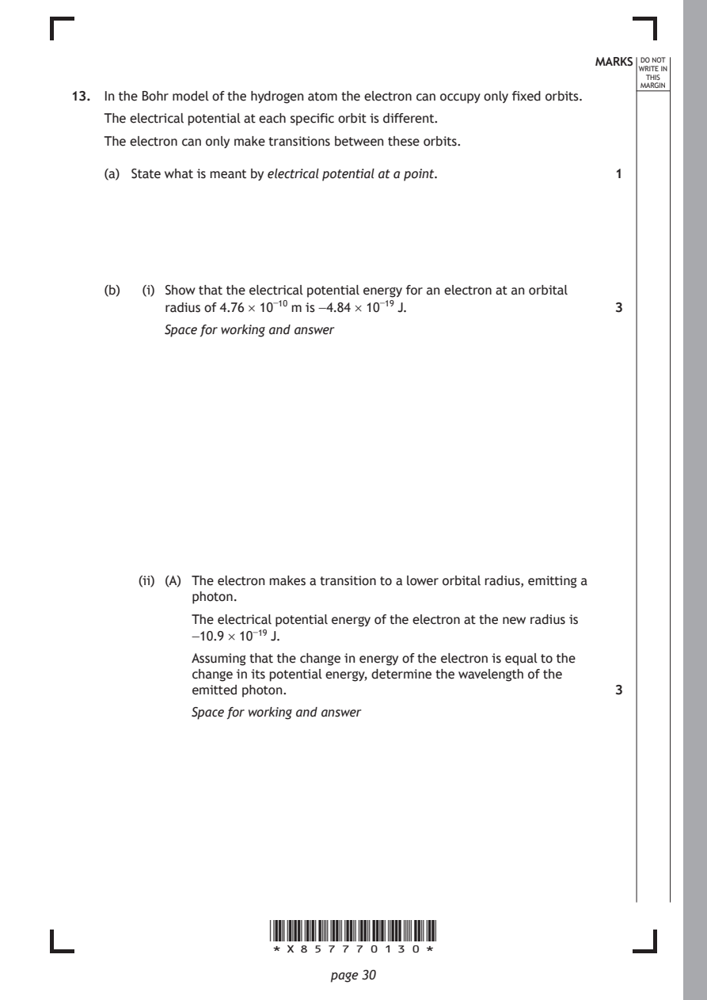
Selectable page text
MARKS _{W}^{D}_{R}^{O}_{I} _{T}^{N}OT
E IN
THIS
MARGIN
13. In the Bohr model of the hydrogen atom the electron can occupy only fixed orbits.
The electrical potential at each specific orbit is different.
The electron can only make transitions between these orbits.
(a) State what is meant by electrical potential at a point. 1
(b) (i) Show that the electrical potential energy for an electron at an orbital
radius of 4.76 × 10⁻¹⁰ m is −4.84 × 10⁻¹⁹ J. 3
Space for working and answer
(ii) (A) The electron makes a transition to a lower orbital radius, emitting a
photon.
The electrical potential energy of the electron at the new radius is
−10.9 × 10⁻¹⁹ J.
Assuming that the change in energy of the electron is equal to the
change in its potential energy, determine the wavelength of the
emitted photon. 3
Space for working and answer
*X857770130*
page 30PDF page 31
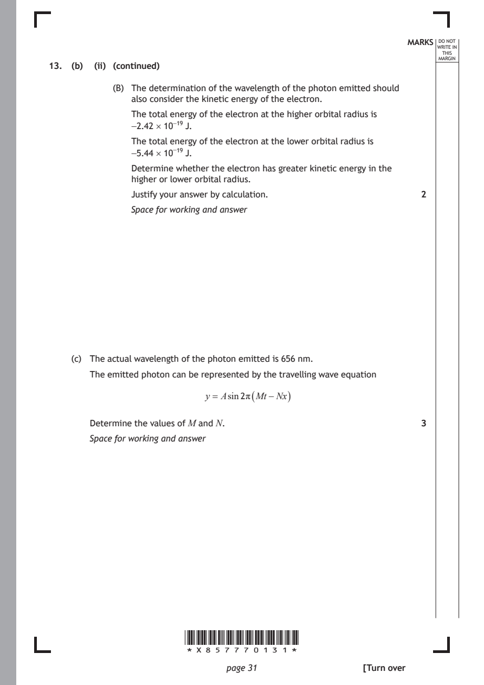
Selectable page text
MARKS _{W}^{D}_{R}^{O}_{I} _{T}^{N}OT
E IN
THIS
MARGIN
13. (b) (ii) (continued)
(B) The determination of the wavelength of the photon emitted should
also consider the kinetic energy of the electron.
The total energy of the electron at the higher orbital radius is
−2.42 × 10⁻¹⁹ J.
The total energy of the electron at the lower orbital radius is
−5.44 × 10⁻¹⁹ J.
Determine whether the electron has greater kinetic energy in the
higher or lower orbital radius.
Justify your answer by calculation. 2
Space for working and answer
(c) The actual wavelength of the photon emitted is 656 nm.
The emitted photon can be represented by the travelling wave equation
y = Asin2π ( Mt−Nx )
Determine the values of M and N. 3
Space for working and answer
*X857770131*
page 31 [Turn overPDF page 32
Question 14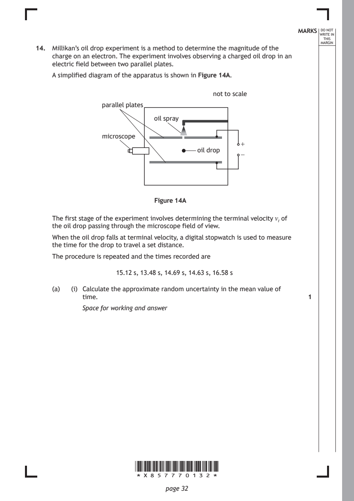
Selectable page text
MARKS _{W}^{D}_{R}^{O}_{I} _{T}^{N}OT
E IN
THIS
MARGIN
14. Millikan’s oil drop experiment is a method to determine the magnitude of the
charge on an electron. The experiment involves observing a charged oil drop in an
electric field between two parallel plates.
A simplified diagram of the apparatus is shown in Figure 14A.
not to scale
parallel plates
oil spray
microscope
+
oil drop
−
Figure 14A
The first stage of the experiment involves determining the terminal velocity vₜ of
the oil drop passing through the microscope field of view.
When the oil drop falls at terminal velocity, a digital stopwatch is used to measure
the time for the drop to travel a set distance.
The procedure is repeated and the times recorded are
15.12 s, 13.48 s, 14.69 s, 14.63 s, 16.58 s
(a) (i) Calculate the approximate random uncertainty in the mean value of
time. 1
Space for working and answer
*X857770132*
page 32PDF page 33
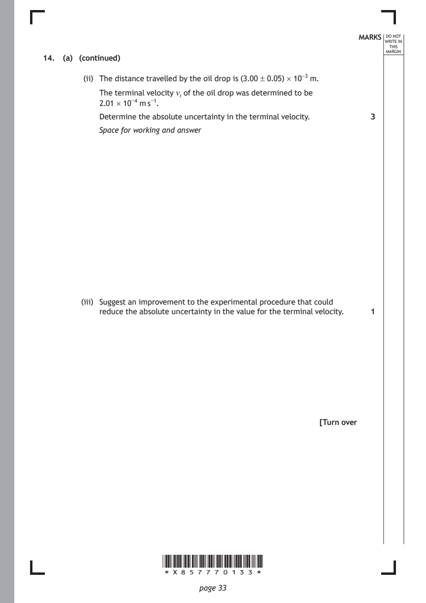
Selectable page text
MARKS _{W}^{D}_{R}^{O}_{I} _{T}^{N}OT
E IN
THIS
MARGIN
14. (a) (continued)
(ii) The distance travelled by the oil drop is (3.00 ± 0.05) × 10⁻³ m.
The terminal velocity vₜ of the oil drop was determined to be
2.01 × 10⁻⁴ m s⁻¹.
Determine the absolute uncertainty in the terminal velocity. 3
Space for working and answer
(iii) Suggest an improvement to the experimental procedure that could
reduce the absolute uncertainty in the value for the terminal velocity. 1
[Turn over
*X857770133*
page 33PDF page 34
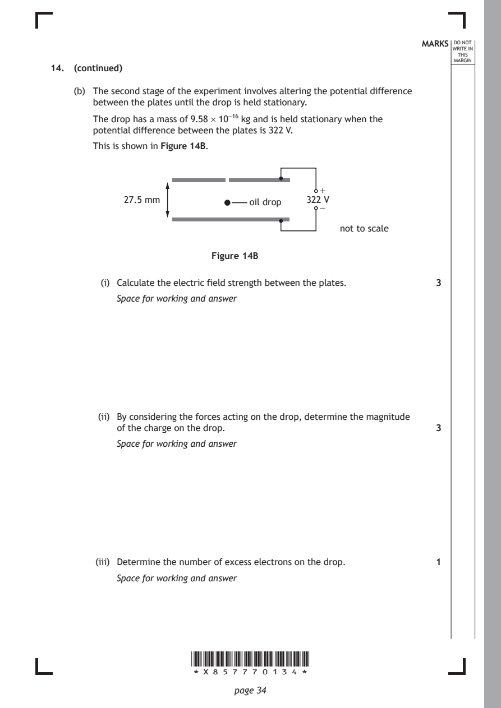
Selectable page text
MARKS _{W}^{D}_{R}^{O}_{I} _{T}^{N}OT
E IN
THIS
MARGIN
14. (continued)
(b) The second stage of the experiment involves altering the potential difference
between the plates until the drop is held stationary.
The drop has a mass of 9.58 × 10⁻¹⁶ kg and is held stationary when the
potential difference between the plates is 322 V.
This is shown in Figure 14B.
+
27.5 mm oil drop 322 V
−
not to scale
Figure 14B
(i) Calculate the electric field strength between the plates. 3
Space for working and answer
(ii) By considering the forces acting on the drop, determine the magnitude
of the charge on the drop. 3
Space for working and answer
(iii) Determine the number of excess electrons on the drop. 1
Space for working and answer
*X857770134*
page 34PDF page 35
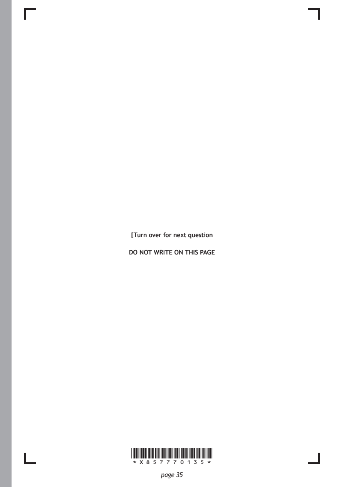
Selectable page text
[Turn over for next question
DO NOT WRITE ON THIS PAGE
*X857770135*
page 35PDF page 36
Question 15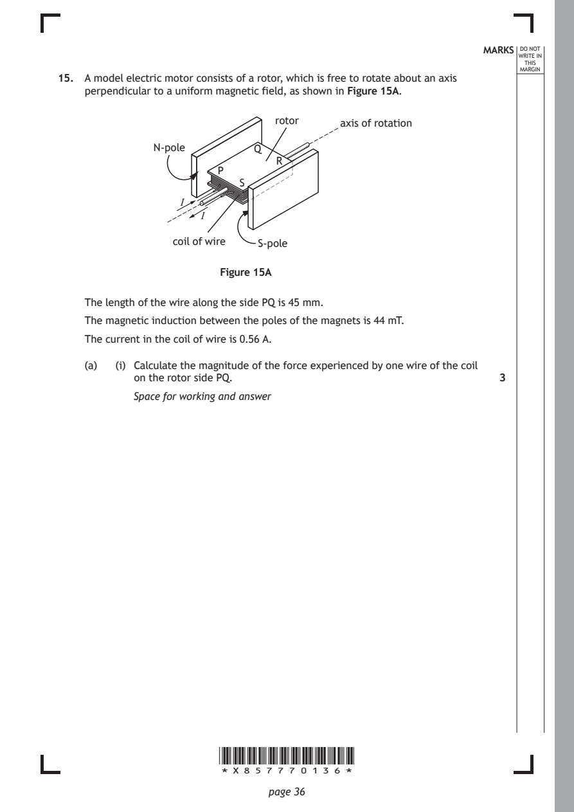
Selectable page text
MARKS _{W}^{D}_{R}^{O}_{I} _{T}^{N}OT
E IN
THIS
MARGIN
15. A model electric motor consists of a rotor, which is free to rotate about an axis
perpendicular to a uniform magnetic field, as shown in Figure 15A.
rotor axis of rotation
N-pole Q
R
P
S
I
I
coil of wire S-pole
Figure 15A
The length of the wire along the side PQ is 45 mm.
The magnetic induction between the poles of the magnets is 44 mT.
The current in the coil of wire is 0.56 A.
(a) (i) Calculate the magnitude of the force experienced by one wire of the coil
on the rotor side PQ. 3
Space for working and answer
*X857770136*
page 36PDF page 37
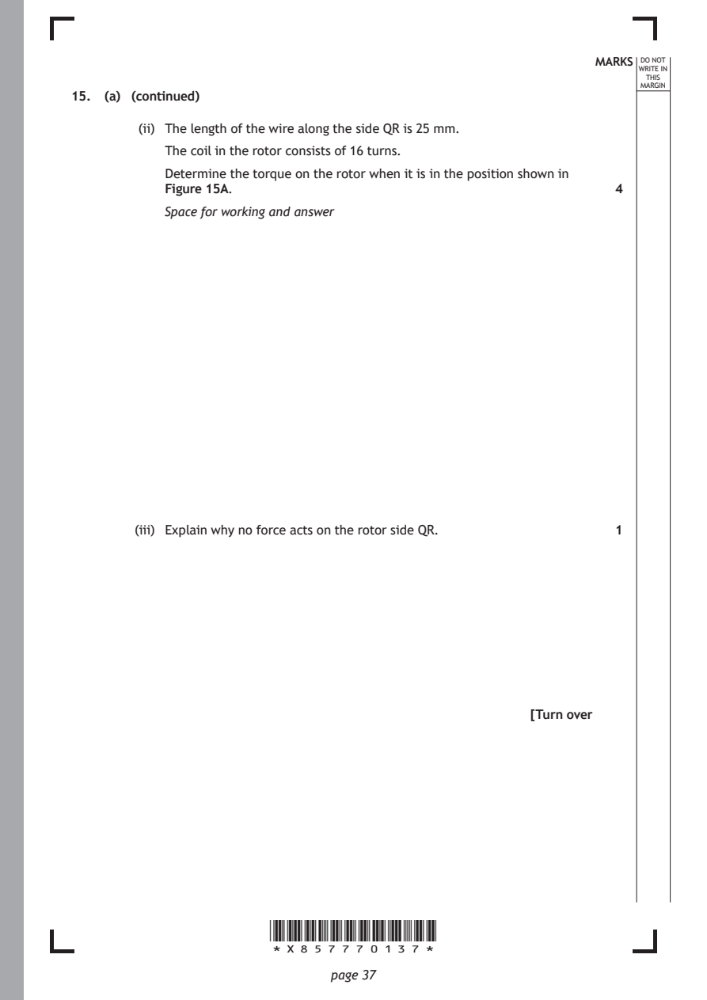
Selectable page text
MARKS _{W}^{D}_{R}^{O}_{I} _{T}^{N}OT
E IN
THIS
MARGIN
15. (a) (continued)
(ii) The length of the wire along the side QR is 25 mm.
The coil in the rotor consists of 16 turns.
Determine the torque on the rotor when it is in the position shown in
Figure 15A. 4
Space for working and answer
(iii) Explain why no force acts on the rotor side QR. 1
[Turn over
*X857770137*
page 37PDF page 38
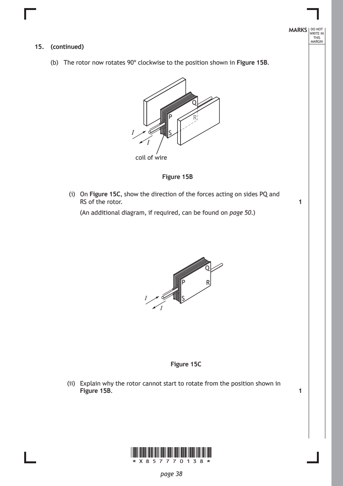
Selectable page text
MARKS _{W}^{D}_{R}^{O}_{I} _{T}^{N}OT
E IN
THIS
MARGIN
15. (continued)
(b) The rotor now rotates 90° clockwise to the position shown in Figure 15B.
Q
P R
I S
I
coil of wire
Figure 15B
(i) On Figure 15C, show the direction of the forces acting on sides PQ and
RS of the rotor. 1
(An additional diagram, if required, can be found on page 50.)
Q
P R
I S
I
Figure 15C
(ii) Explain why the rotor cannot start to rotate from the position shown in
Figure 15B. 1
*X857770138*
page 38PDF page 39
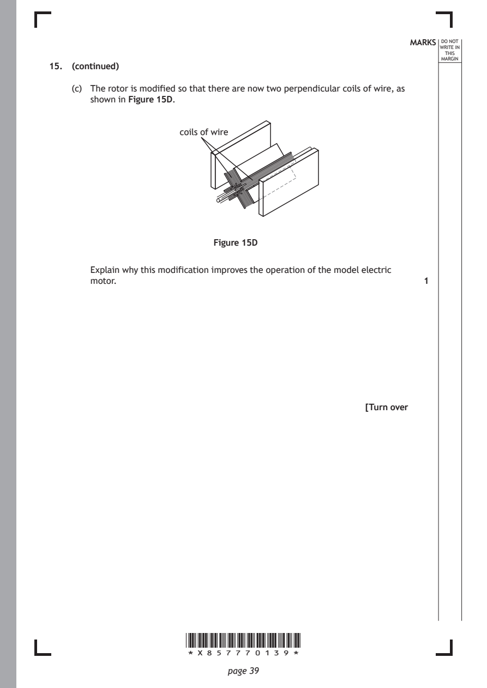
Selectable page text
MARKS _{W}^{D}_{R}^{O}_{I} _{T}^{N}OT
E IN
THIS
MARGIN
15. (continued)
(c) The rotor is modified so that there are now two perpendicular coils of wire, as
shown in Figure 15D.
coils of wire
Figure 15D
Explain why this modification improves the operation of the model electric
motor. 1
[Turn over
*X857770139*
page 39PDF page 40
Question 16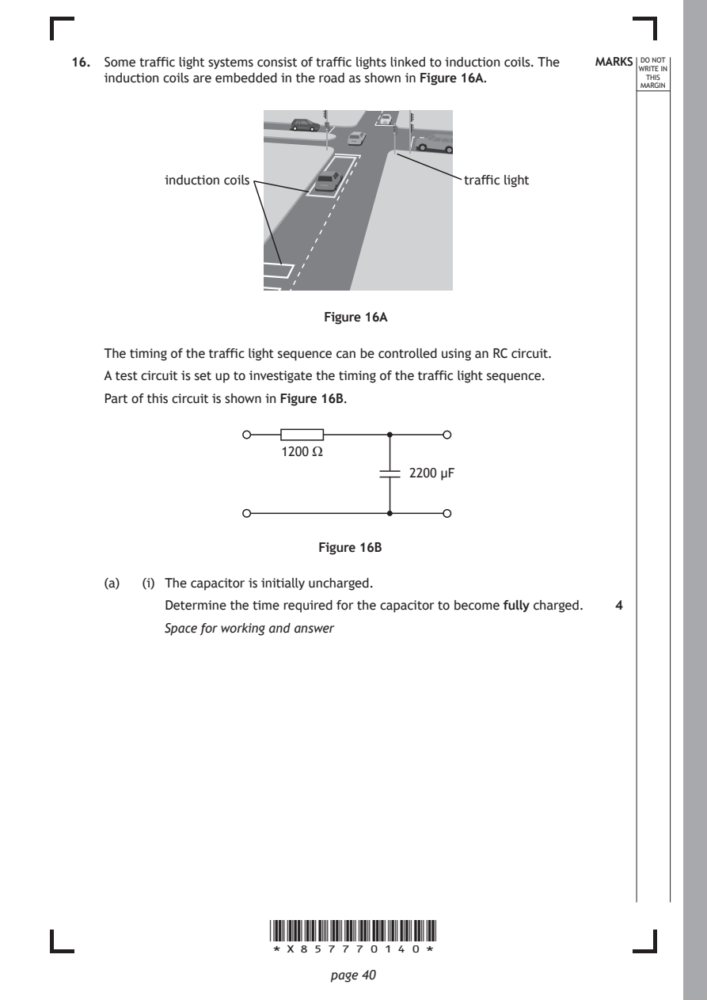
Selectable page text
16. Some traffic light systems consist of traffic lights linked to induction coils. The MARKS _{W}^{D}_{R}^{O}_{I} _{T}^{N}OT
E IN
induction coils are embedded in the road as shown in Figure 16A. THIS
MARGIN
induction coils traffic light
Figure 16A
The timing of the traffic light sequence can be controlled using an RC circuit.
A test circuit is set up to investigate the timing of the traffic light sequence.
Part of this circuit is shown in Figure 16B.
1200 Ω
2200 μF
Figure 16B
(a) (i) The capacitor is initially uncharged.
Determine the time required for the capacitor to become fully charged. 4
Space for working and answer
*X857770140*
page 40PDF page 41
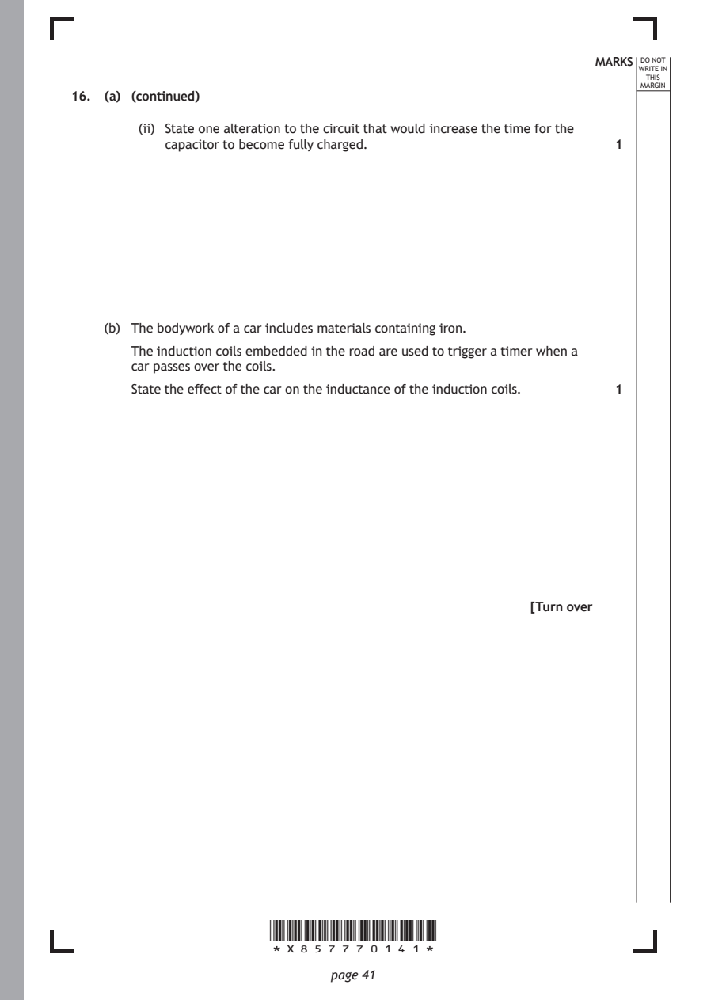
Selectable page text
MARKS _{W}^{D}_{R}^{O}_{I} _{T}^{N}OT
E IN
THIS
MARGIN
16. (a) (continued)
(ii) State one alteration to the circuit that would increase the time for the
capacitor to become fully charged. 1
(b) The bodywork of a car includes materials containing iron.
The induction coils embedded in the road are used to trigger a timer when a
car passes over the coils.
State the effect of the car on the inductance of the induction coils. 1
[Turn over
*X857770141*
page 41PDF page 42
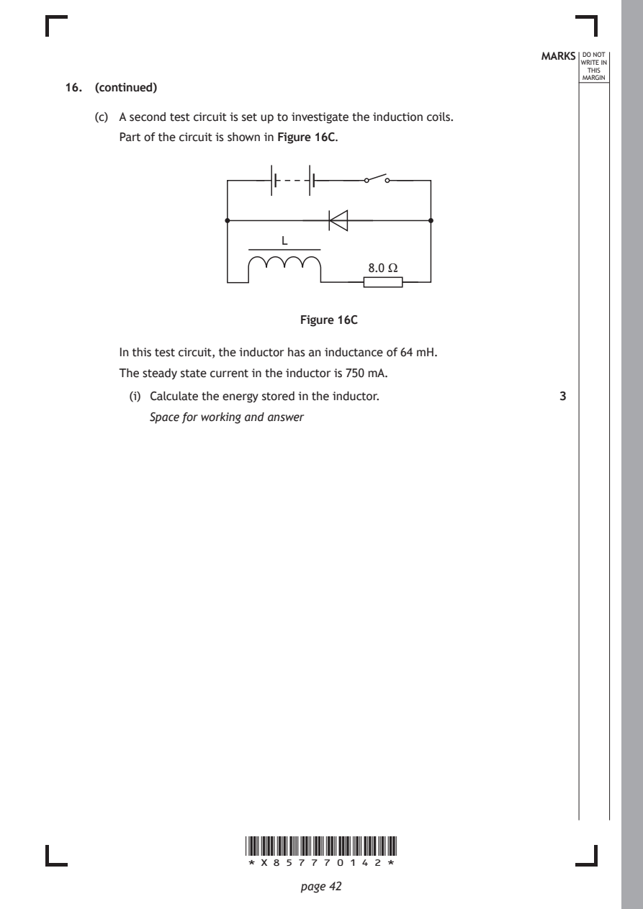
Selectable page text
MARKS _{W}^{D}_{R}^{O}_{I} _{T}^{N}OT
E IN
THIS
MARGIN
16. (continued)
(c) A second test circuit is set up to investigate the induction coils.
Part of the circuit is shown in Figure 16C.
L
8.0 Ω
Figure 16C
In this test circuit, the inductor has an inductance of 64 mH.
The steady state current in the inductor is 750 mA.
(i) Calculate the energy stored in the inductor. 3
Space for working and answer
*X857770142*
page 42PDF page 43
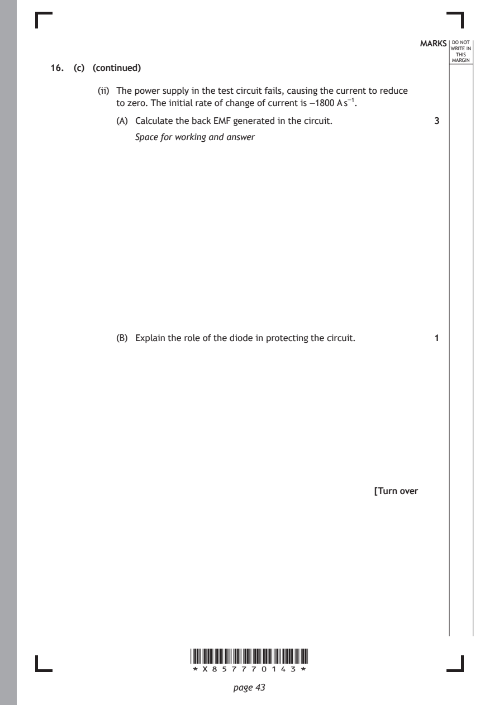
Selectable page text
MARKS _{W}^{D}_{R}^{O}_{I} _{T}^{N}OT
E IN
THIS
MARGIN
16. (c) (continued)
(ii) The power supply in the test circuit fails, causing the current to reduce
to zero. The initial rate of change of current is −1800 A s⁻¹.
(A) Calculate the back EMF generated in the circuit. 3
Space for working and answer
(B) Explain the role of the diode in protecting the circuit. 1
[Turn over
*X857770143*
page 43PDF page 44
Question 17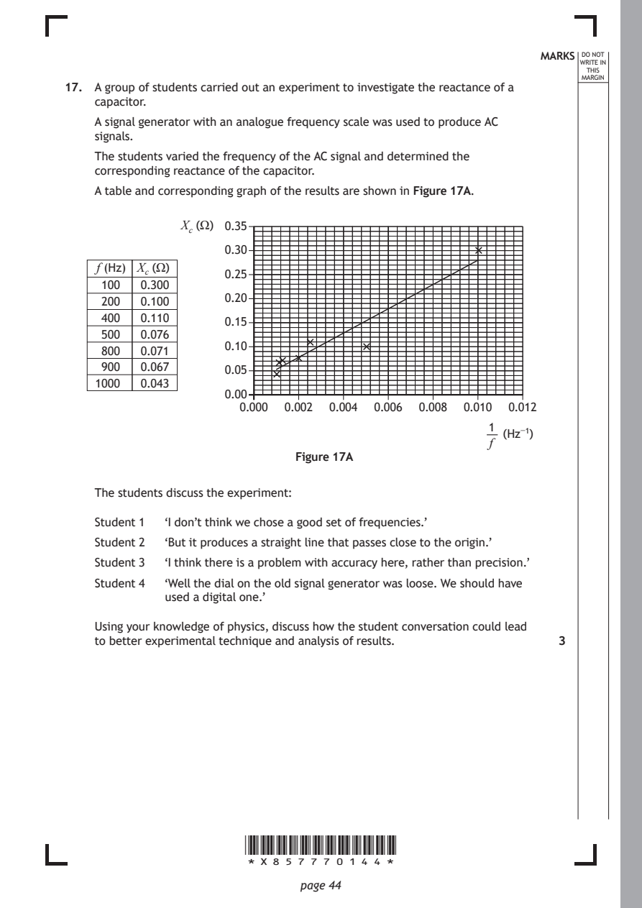
Selectable page text
MARKS _{W}^{D}_{R}^{O}_{I} _{T}^{N}OT
E IN
THIS
MARGIN
17. A group of students carried out an experiment to investigate the reactance of a
capacitor.
A signal generator with an analogue frequency scale was used to produce AC
signals.
The students varied the frequency of the AC signal and determined the
corresponding reactance of the capacitor.
A table and corresponding graph of the results are shown in Figure 17A.
X_{c} (Ω) 0.35
0.30
f (Hz) X_{c} (Ω)
0.25
100 0.300
0.20
200 0.100
400 0.110
0.15
500 0.076
0.10
800 0.071
900 0.067 0.05
1000 0.043
0.00
0.000 0.002 0.004 0.006 0.008 0.010 0.012
1
(Hz⁻¹)
f
Figure 17A
The students discuss the experiment:
Student 1 ‘I don’t think we chose a good set of frequencies.’
Student 2 ‘But it produces a straight line that passes close to the origin.’
Student 3 ‘ I think there is a problem with accuracy here, rather than precision.’
Student 4 ‘Well the dial on the old signal generator was loose. We should have
used a digital one.’
Using your knowledge of physics, discuss how the student conversation could lead
to better experimental technique and analysis of results. 3
*X857770144*
page 44PDF page 45
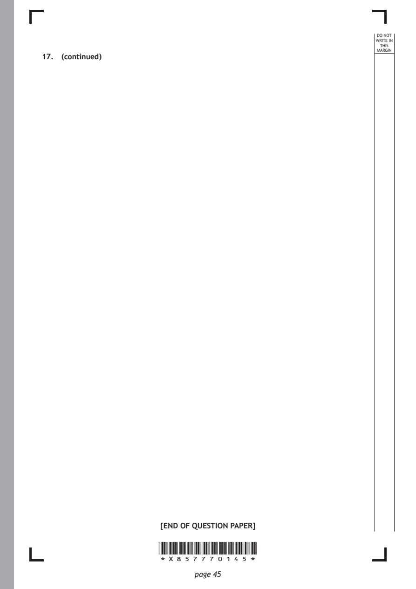
Selectable page text
DO NOT
WRITE IN
THIS
MARGIN
17. (continued)
[END OF QUESTION PAPER]
*X857770145*
page 45PDF page 46
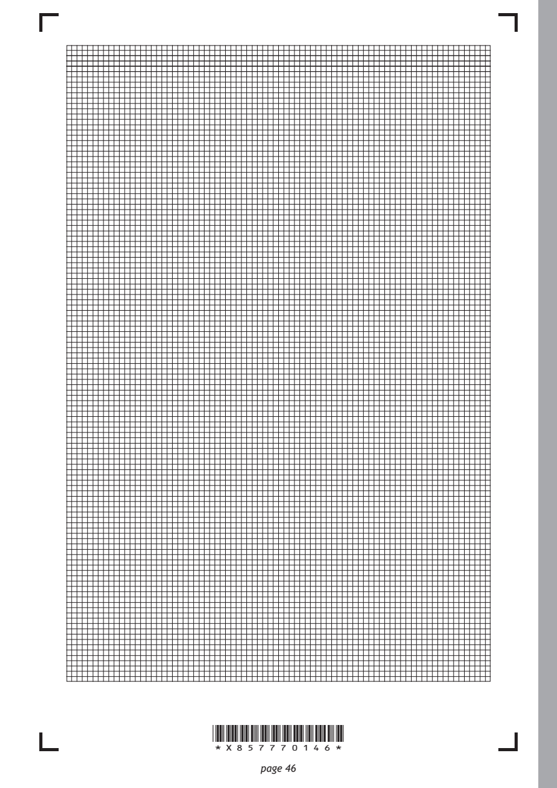
Selectable page text
*X857770146*
page 46PDF page 47
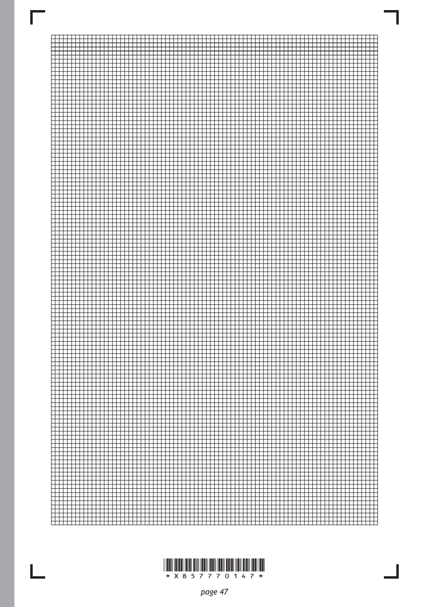
Selectable page text
*X857770147*
page 47PDF page 48
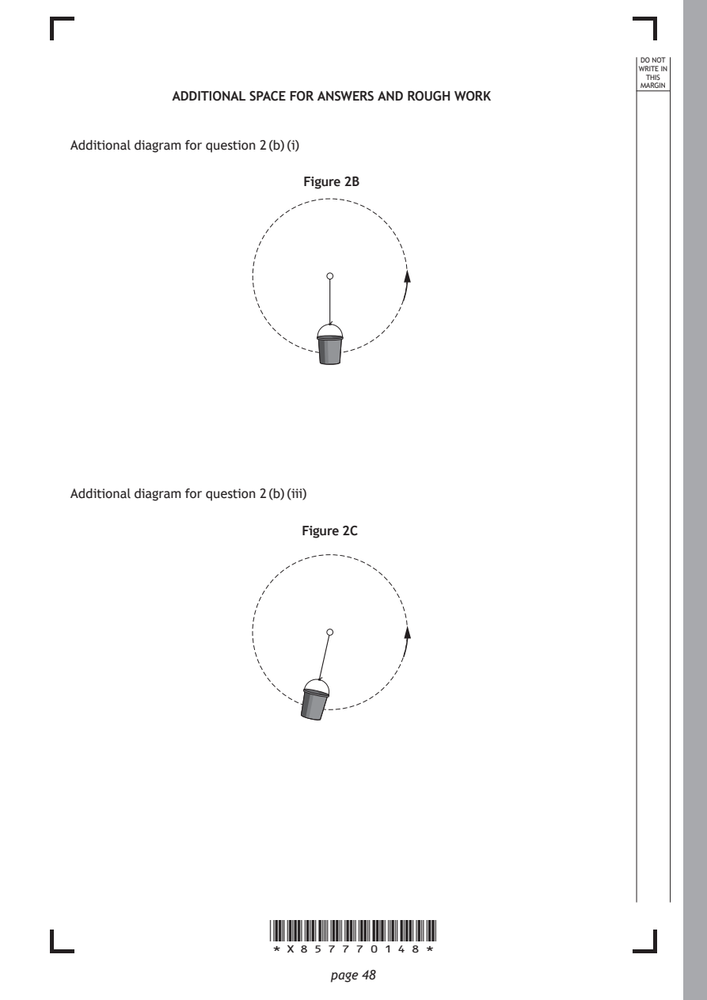
Selectable page text
DO NOT
WRITE IN
THIS
MARGIN
ADDITIONAL SPACE FOR ANSWERS AND ROUGH WORK
Additional diagram for question 2 (b) (i)
Figure 2B
Additional diagram for question 2 (b) (iii)
Figure 2C
*X857770148*
page 48PDF page 49
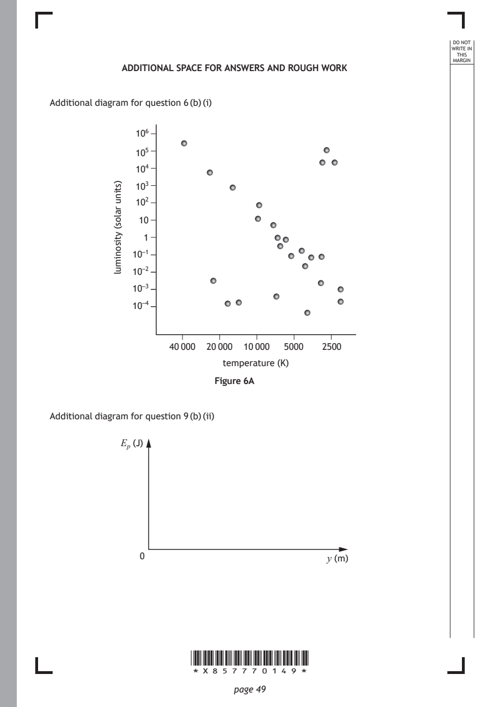
Selectable page text
DO NOT
WRITE IN
THIS
MARGIN
ADDITIONAL SPACE FOR ANSWERS AND ROUGH WORK
Additional diagram for question 6 (b) (i)
40 000 20 000 10 000 5000 2500
temperature (K)
*X857770149*
page 49
)stinu
ralos(
ytisonimul
10⁶
10⁵
10⁴
10³
10²
10
1
10^{–}¹
10^{–}²
10^{–}³
10^{–}⁴
Figure 6A
Additional diagram for question 9 (b) (ii)
Eₚ (J)
0 y (m)PDF page 50
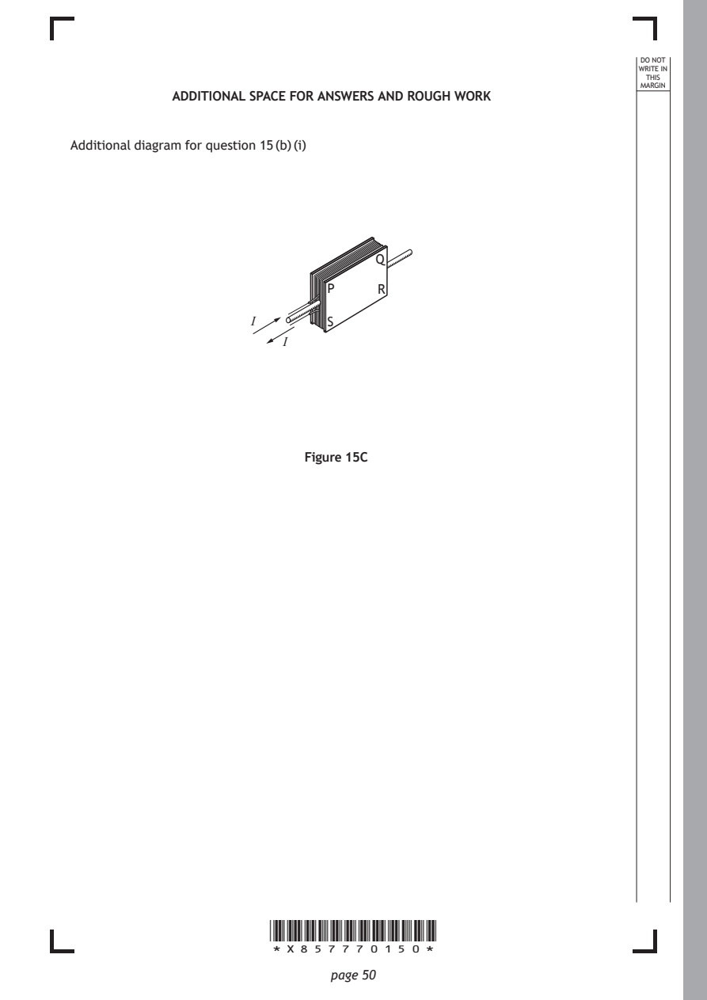
Selectable page text
DO NOT
WRITE IN
THIS
MARGIN
ADDITIONAL SPACE FOR ANSWERS AND ROUGH WORK
Additional diagram for question 15 (b) (i)
Q
P R
I S
I
Figure 15C
*X857770150*
page 50PDF page 51
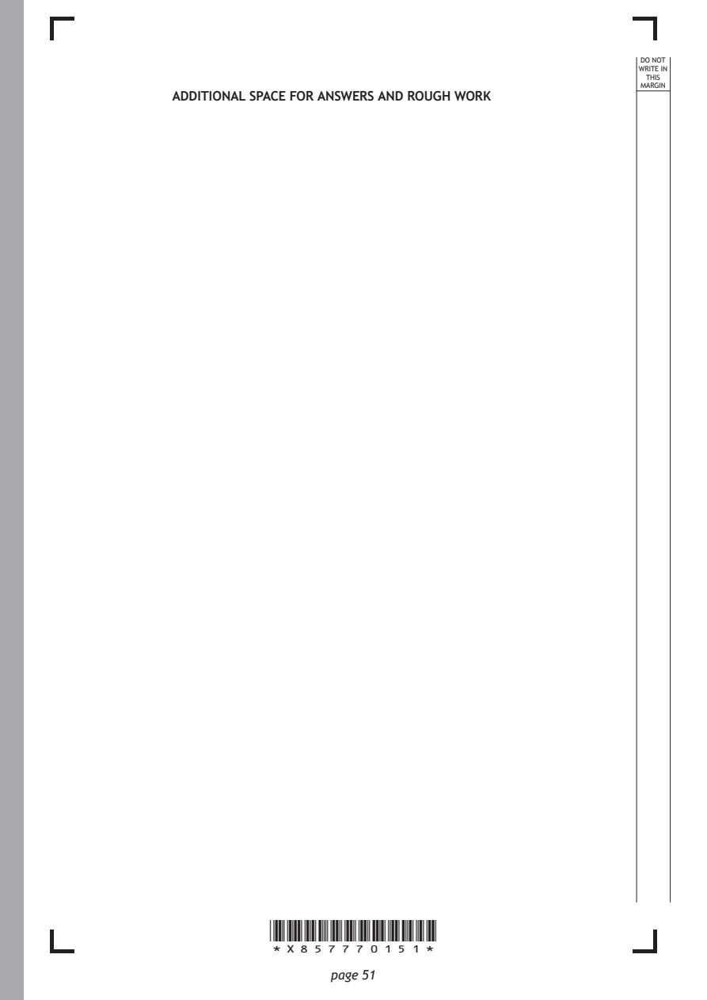
Selectable page text
DO NOT
WRITE IN
THIS
MARGIN
ADDITIONAL SPACE FOR ANSWERS AND ROUGH WORK
*X857770151*
page 51PDF page 52
Selectable page text
DO NOT
WRITE IN
THIS
MARGIN
ADDITIONAL SPACE FOR ANSWERS AND ROUGH WORK
Acknowledgement of copyright
Question 9 Raphael Ruz/shutterstock.com
*X857770152*
page 52